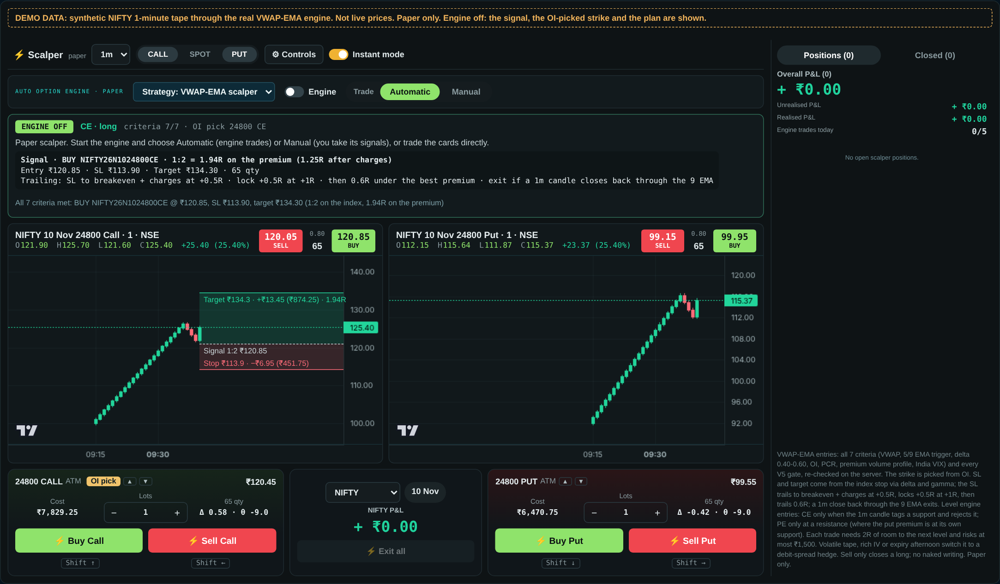
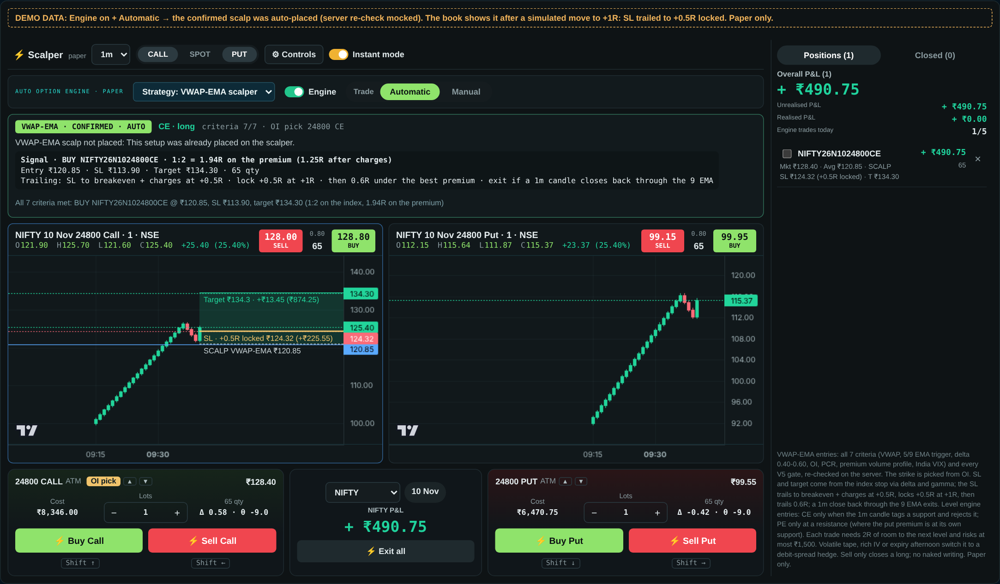
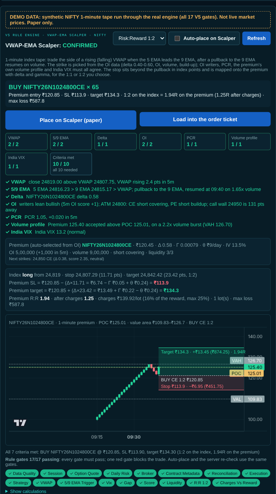

claude/busy-planck-kqqyyn). It has been tested on synthetic 1-minute data and has not yet run against live Groww market data. Automatic placement goes to the paper Smart Scalper only; live orders still need TradePulse's preview-and-PIN flow. This is software documentation, not investment advice.The VWAP-EMA Scalper buys an index option (a CE for a long, a PE for a short) when the 1-minute index tape and the option chain agree on a short, clean move. It enters only when all seven criteria pass, worth 10 points in total, and every V5 rule gate is green.
All inputs are fetched server-side by /api/algo-trading and passed to the Python engine. If an input is missing, the criteria that need it fail closed: the strategy waits instead of guessing.
| Input | Source in TradePulse | Used for |
|---|---|---|
| Index 1-minute candles, today | Groww history, timeframe=1m | VWAP, 5/9 EMA, ATR(14), trigger, structural stop |
| Near-month futures volume | Attached to the index candles (volume=futures) | VWAP weighting and the trigger's volume check. Index candles carry no volume of their own. |
| Option chain (full, ±3%) | /api/option-chain?full=1 | Premium, delta, IV, theta, OI, volume, lot and tick size for every strike |
| Options flow | Market-intel engine (options_flow) | Per-strike 5-minute OI change and build-up type, OI direction score, PCR and its 5-minute change, OI walls |
| India VIX | Market-intel volatility (value and regime) | Volatility criterion |
| Selected premium, 1-minute candles | /api/market-data/option-history (second pass) | The premium's volume profile (POC, VAH, VAL) |
| Operational state | Broker health, daily risk, contract master, SAFE_MODE, kill switch | V5 operational gates |
needs_premium_candles. Pass 2 adds those candles so the volume-profile criterion can be scored.The side comes from where price sits relative to VWAP and how the two EMAs are stacked, on the latest completed candle:
| Condition | Side | Buys |
|---|---|---|
| Close > VWAP and 5 EMA > 9 EMA | LONG | CE (call) |
| Close < VWAP and 5 EMA < 9 EMA | SHORT | PE (put) |
| VWAP and EMAs disagree | Lean only (the side of VWAP) | Nothing until both agree |
| Close exactly on VWAP | None | Nothing |
Only option buying is used. The PE side is the exact mirror of the CE side throughout this document: above becomes below, rising becomes falling, highs become lows.
Each criterion scores points. The strategy trades only at 10 / 10, so every criterion is effectively mandatory. The score is shown so a trader can see how close a setup is. The rules below are for a long (CE); the short (PE) side mirrors them.
Why: VWAP is the session's fair price, where institutions benchmark fills. A long above a rising VWAP is with the session's flow. Stretching far above it is chasing, and those moves often snap back to VWAP inside a scalp's time frame.
Why: the 5/9 EMA pair is the classic fast momentum read on 1-minute charts. Buying the first resumption after a shallow pullback to the 9 EMA gives a defined stop just under the pullback. The volume check filters out drifts that nobody is trading.
Why: a scalp needs a premium that moves with the index point for point. Below 0.40 (OTM) the premium barely reacts and theta decay dominates. Above 0.60 (deep ITM) the option is a costly proxy for the future, with less leverage per rupee.
Why: option writers are the best-capitalised participants. Put writers defend support; call writers cap rallies. A long needs writers leaning its way and no big call wall sitting between the entry and the target.
Why: a healthy, rising PCR means puts are being written under the market (support). Extreme readings mean positioning is crowded and tends to unwind.
Why: the option must confirm the index. A premium accepted above the price where most of today's contracts traded shows buyers in control of that contract, not just the underlying.
Why: below about 10, premiums hardly move and charges dominate. In extreme volatility, 1-minute structure breaks down, spreads widen and stops get run.
The strategy picks the contract itself; the trader doesn't choose a strike. Candidates are the trade side's options (calls for a long) with:
Each candidate is ranked by a selection score:
The top-ranked strike becomes the selected premium. On the Scalper desk the trade side's card and chart switch to it, marked with an OI pick badge. The ▲▼ buttons still override it until the next new pick. The next three candidates are listed with their scores.
Each 1-minute premium candle's volume is spread evenly across the price bins its high-low range covers, using 24 bins over the day's range.
The criterion asks whether the premium is accepted above value: a close above the POC, plus either a break of the VAH or a 1.5× volume burst. The chart draws the POC, VAH and VAL as dashed lines.
The stop is where the scalp is proven wrong: back through the pullback and the 9 EMA. The target is a multiple of that risk, so reward-to-risk is fixed by design, not hoped for.
An option premium does not move one-for-one with the index. For a small index move x, its change is approximately:
Applied to the stop and the target, with theta charged for the expected 10-minute hold:
Why gamma matters. Gamma makes the premium's response convex. On an adverse move the long option loses a little less than delta alone predicts (−½γR²). On a favourable move it gains a little more (+½γ(kR)²). The premium reward-to-risk is therefore usually slightly better than the index ratio. Theta and tick rounding take some of that back.
Effect by expiry. With a week or more to expiry, gamma is small and the correction is a few paise. On expiry day gamma is large, so premium stops and targets move fast. The panel flags expiry days.
Both prices are rounded to the contract's tick (₹0.05).
The V5 R:R gate compares the premium reward-to-risk with the ratio the trader chose, allowing 3% for tick rounding. Every other strategy in TradePulse keeps its 2.0 minimum.
| Chosen | Index target | Premium R:R needed |
|---|---|---|
| 1:2 (default) | 2 × R | ≥ 1.94 |
| 1:1 | 1 × R | ≥ 0.97 |
Every plan is costed per lot, for both exits (target and stop), with a model tuned for liquid near-ATM index options:
| Component | Rate |
|---|---|
| Brokerage | ₹20 per order (₹40 round trip) |
| STT | 0.1% of the sell premium |
| Exchange transaction charge | 0.03503% of premium turnover |
| SEBI fee / stamp duty | ₹10 per crore / 0.003% of the buy premium |
| GST | 18% on brokerage + exchange + SEBI |
| Slippage | 0.15% per side, beyond the spread |
| Spread | The chain's bid/ask, capped at 0.5% of the premium per side (Groww's chain has no live bid/ask; the route estimates it from IV) |
Lots. lots = ⌊ max loss per trade ÷ (premium risk × lot size + charges at the stop) ⌋, capped by the Scalper's lots setting. The defaults are a ₹1,500 max loss and 1 lot, taken from the Scalper desk's own controls. If one lot already risks more than the max loss, there is no trade.
Inputs: a synthetic NIFTY 1-minute tape (morning chop, a measured trend, a pullback to the 9 EMA, then a high-volume resumption candle at 09:40) and a synthetic chain and OI flow, run through the real engine path with every V5 gate. DEMO DATA, not live prices
| Criterion | Reading | Points |
|---|---|---|
| VWAP | Close 24,819.00 above VWAP 24,807.75, VWAP rising 2.4 pts in 5 min, 0.99 ATR from VWAP | 2 / 2 |
| 5/9 EMA | 5 EMA 24,816.23 > 9 EMA 24,815.17 > VWAP; pullback to the 9 EMA, resumed at 09:40 on 1.65× volume | 2 / 2 |
| Delta | NIFTY 24800 CE, delta 0.58 (picked from OI) | 1 / 1 |
| OI | Writer score +1; ATM 24800: call short covering, put short build-up; call wall 24950 is 131 pts away | 2 / 2 |
| PCR | 1.05, +0.02 in 5 min | 1 / 1 |
| Volume profile | Premium ₹125.40 above POC ₹125.01, on a 2.2× volume burst (VAH ₹126.70) | 1 / 1 |
| India VIX | 13.2, normal | 1 / 1 |
| Total | All seven met; all 17 V5 gates green | 10 / 10 |
| Step | Calculation | Result |
|---|---|---|
| Index stop / R | 24,819.00 − stop 24,807.29 | R = 11.71 pts |
| Index target (1:2) | 24,819.00 + 2 × 11.71 | 24,842.42 |
| Greeks | delta 0.576 · gamma 0.000791 · theta ₹9/day · IV 13.5% | theta drag ₹0.24 |
| Premium SL | ₹120.85 − (0.576 × 11.71 = ₹6.74 − gamma ₹0.05 + theta ₹0.24) | ₹113.90 |
| Premium target | ₹120.85 + (0.576 × 23.42 = ₹13.49 + gamma ₹0.22 − theta ₹0.24) | ₹134.30 |
| Premium R:R | (134.30 − 120.85) ÷ (120.85 − 113.90) | 1.94 (≥ 1.94 ✓) |
| Charges per lot | ₹139.92 at the target = 16% of the reward (≤ 25% ✓) | net R:R 1.25 |
| Size | ₹1,500 ÷ (6.95 × 65 + ₹136.05) → 2, capped at 1 lot | 1 lot = 65 qty |
| Max loss | 6.95 × 65 + charges at the stop | ₹587.80 |
Same tape at 1:1: target ₹127.40, charges 33% of the reward, net R:R 0.49. The trade is refused by the 25% rule.
A confirmed strategy decision must also pass TradePulse's authoritative no-trade engine. One red gate blocks the trade. For this strategy the generic gates map as follows:
| Gate | For the VWAP-EMA scalper |
|---|---|
| Data quality | Valid, ordered candles; the latest under 15 minutes old during market hours |
| Session | Inside the entry window (09:35-14:45 IST; earlier cut-off on expiry day) |
| Option quote, daily risk, broker, contract metadata, reconciliation, execution | Operational state, supplied and verified on the server |
| Strategy | All seven criteria met and a valid plan |
| "Breakout" → VWAP | Criterion ① passed |
| "Retest" → 5/9 EMA trigger | Criterion ② passed |
| VIX | Regime LOW / NORMAL / HIGH |
| Gap | Normal open, or a confirmed gap hold/fill |
| Score | 10 / 10 |
| Liquidity | The selected strike scores ≥ 2/3 (premium ≥ floor, OI > 0, traded today) |
| R:R | Premium R:R ≥ 0.97 (1:1) or ≥ 1.94 (1:2) |
| Charges vs reward | Charges ≤ 25% of the reward, and lots ≥ 1 |
| SAFE_MODE / kill switch | Either one blocks all new entries |
Not applied, by design: the 5-minute ADX regime gate (the 1-minute VWAP/EMA stack is the scalper's own trend filter) and the generic option-flow gate (OI and PCR are strategy criteria ④ and ⑤ instead).
| Scalper setting | Behaviour |
|---|---|
| Strategy: VWAP-EMA scalper (default) | The Scalper trades this strategy. The level engine never enters, but it still manages exits. |
| Engine on + Trade Automatic | A confirmed setup is placed automatically, once per setup (keyed on the trigger candle and side). |
| Engine on + Trade Manual | "⚡ Take trade · BUY 24800 CE 1:2" lights up when confirmed; one click places it. |
| Strategy: Level scalper | The desk's original support/resistance engine. |
Every placement takes the same safe path:
POST /api/algo-trading with action: PLACE_ON_SCALPER re-runs the strategy and all V5 gates on the server. The browser can't confirm a trade./api/live-orders, with a preview, a PIN, the LIVE limits and the kill switch.Once in, the position is managed by a staged, cost-covered trail. R is the initial premium risk (entry − initial SL). The stop only ever moves up.
| Stage | Triggered when the best premium reaches | SL moves to | Example (entry ₹120.85, R ₹6.95) |
|---|---|---|---|
| Initial | entry | the delta-gamma SL | ₹113.90 |
| Breakeven | +0.5R (₹124.33) | entry + round-trip charges per unit (cost-covered) | ₹123.00 |
| Locked | +1R (₹127.80) | entry + 0.5R | ≈ ₹124.32 |
| Trailing | beyond +1R | best premium − 0.6R | at ₹131 → ₹126.83 |
| Exit reason | Rule |
|---|---|
SQUARE_OFF_15_15 | Every open position is closed at 15:15 IST |
MAX_LOSS_PER_TRADE | The open loss reaches the max loss per trade |
SPOT_LEVEL_BROKEN / SPOT_TARGET | The index trades through the structural stop / reaches the index target |
TARGET | The premium reaches the premium target |
STOP_LOSS, BREAKEVEN_STOP, LOCKED_PROFIT_STOP, TRAILING_STOP | The premium reaches the stop; the reason names the trail stage |
EMA9_LOST | After breakeven: a completed 1-minute index candle closes back below the 9 EMA (above it, for a PE). The scalp's reason is gone. |
SCALP_TIME_STOP | The trade hasn't reached +0.5R within the Scalper's time stop (default 12 minutes) |
The trail stage, the initial SL and the charges per unit are saved with the order, so a server restart resumes the same trail. On the premium chart the risk-reward drawing follows the live SL. Once the SL is above the entry, it shows the profit locked, e.g. "SL · +0.5R locked ₹124.32 (+₹225.55)". Keep the execution page open: exits are evaluated by the Scalper desk's 10-second scan, which runs in the browser while the page is open, the same way the Smart Scalper has always worked.
All screens below show DEMO DATA: the built application rendering the real engine's output for the synthetic tape of section 9. They are not live market prices.



Defaults in ScalpConfig (Python) and VWAP_EMA_TRAIL (TypeScript). The max loss per trade and the lots cap come from the Scalper desk's Controls.
| Parameter | Value | Meaning |
|---|---|---|
| EMA fast / slow | 5 / 9 | Momentum pair on 1-minute closes |
| ATR period | 14 | 1-minute ATR used for every distance rule |
| Minimum session bars | 15 | No evaluation before 15 one-minute candles today |
| VWAP slope bars | 5 | VWAP must rise (fall) over this many bars |
| Max distance from VWAP | 1.5 ATR | Beyond this the entry is a chase |
| Pullback window / EMA tolerance | 3 bars / 0.05 ATR | Where the 9 EMA tag must occur |
| Trigger volume | ≥ 1.2× | Futures volume vs the prior 20 bars |
| Trigger age / max drift | ≤ 1 bar / 0.5 ATR | Freshness of the signal |
| Strike pool delta / criterion delta | 0.35-0.65 / 0.40-0.60 | Selection band / pass band |
| Min premium / max spread | ₹20 / 3% | Candidate filters |
| PCR long / short / stretched | ≥ 0.80 / ≤ 1.20 / <0.50 or >1.60 | PCR bands |
| India VIX | 10-24, not EXTREME | Tradeable volatility |
| Profile bins / value area / burst | 24 / 70% / 1.5× | Premium volume profile |
| Stop buffer / min R / max R | 0.15 / 0.30 / 1.50 ATR | Structural stop rules |
| Hold for theta | 10 min | Theta charged on the plan |
| Max charges share | 25% | Of the reward at the target |
| Slippage / spread cap | 0.15% / 0.5% per side | Scalper cost model |
| R:R tolerance | 3% | Tick-rounding allowance on the premium ratio |
| Trail: breakeven / lock / lock to / gap | +0.5R / +1R / +0.5R / 0.6R | Staged trailing stop |
| Max loss per trade / lots cap | ₹1,500 / 1 | Scalper Controls (defaults) |
| Scalp time stop | 12 min | Scalper Controls (default) |
| File | Role |
|---|---|
quant/src/tradepulse_quant/algo_engine/scalp_strategy.py | Criteria, strike selection, volume profile, delta-gamma plan, charges, sizing |
quant/src/tradepulse_quant/algo_engine/engine.py | Wiring into the V5 engine (_scalp_evidence); completed-candle filtering |
quant/src/tradepulse_quant/algo_engine/no_trade_engine.py | The V5 gates; strategy-specific R:R minimum |
apps/web/app/api/algo-trading/route.ts | Inputs, two-pass evaluation, PLACE_ON_SCALPER with the server re-check |
services/paper-trading/src/smart-scalper.ts | place(), vwapEmaTrail(), emaMomentumLost(), exits |
apps/web/components/scalper/scalper-desk.tsx | Strategy selector, auto and manual placement, OI-pick strike, drawings |
apps/web/components/scalper/premium-chart.tsx | Risk-reward drawing (reward zone, risk zone, locked-profit line) |
quant/tests/test_scalp_strategy.py | Criteria, delta-gamma maths, 1:1 vs 1:2, PE mirror, V5 integration |
tests/unit/scalp-place.test.ts, tests/contract/algo-trading-route.test.ts | Placement limits, staged trail, momentum exit, chart layout, route guards |
docs/operations/vwap-ema-scalper.md | Operator notes (Markdown) |